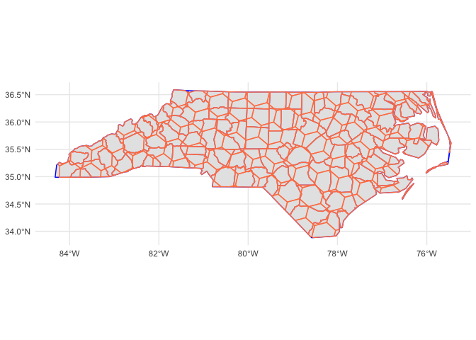

The goal of paisaje is to provide tools for landscape analysis.
Installation
You can install the development version of paisaje from GitHub with:
# install.packages("pak")
pak::pak("ManuelSpinola/paisaje")Example
This is a basic example which shows you how to use the package:
Let’s bring an sf object
nc = st_read(system.file("shape/nc.shp", package="sf"))
#> Reading layer `nc' from data source
#> `/Library/Frameworks/R.framework/Versions/4.4-arm64/Resources/library/sf/shape/nc.shp'
#> using driver `ESRI Shapefile'
#> Simple feature collection with 100 features and 14 fields
#> Geometry type: MULTIPOLYGON
#> Dimension: XY
#> Bounding box: xmin: -84.32385 ymin: 33.88199 xmax: -75.45698 ymax: 36.58965
#> Geodetic CRS: NAD27Create an h3 grid of resolution 5
h3_grid_nc <- get_h3_grid(nc, resolution = 4)Make a map
ggplot() +
theme_minimal() +
geom_sf(data = nc, color = "blue", linewidth = 0.5) +
geom_sf(data = h3_grid_nc, alpha = 0.4, color = "coral", linewidth = 0.5)